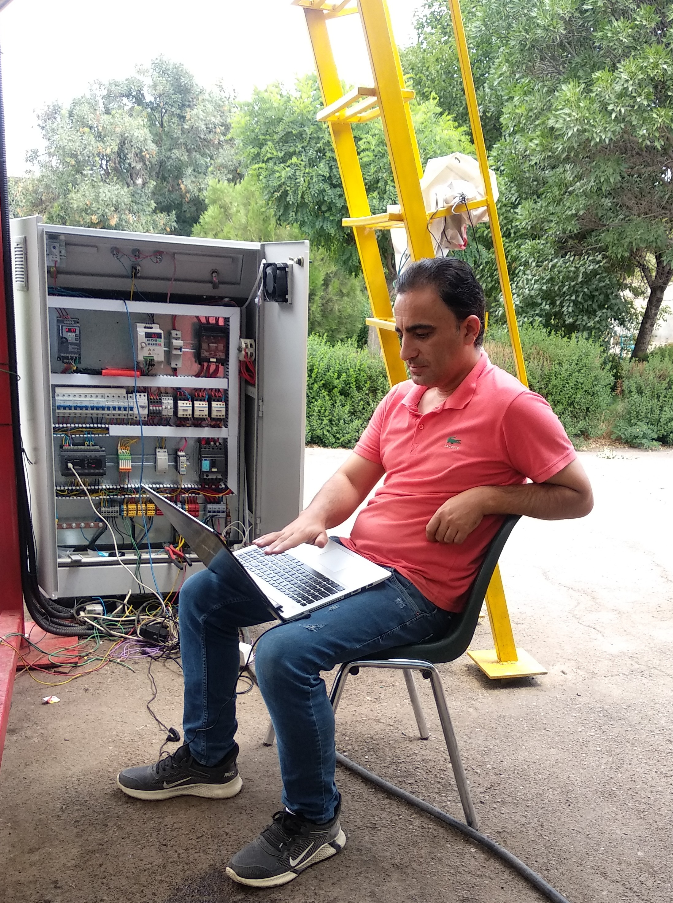
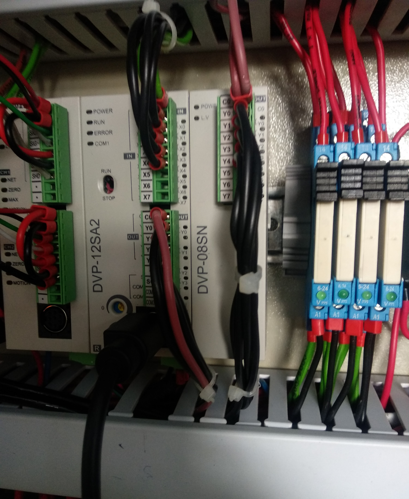
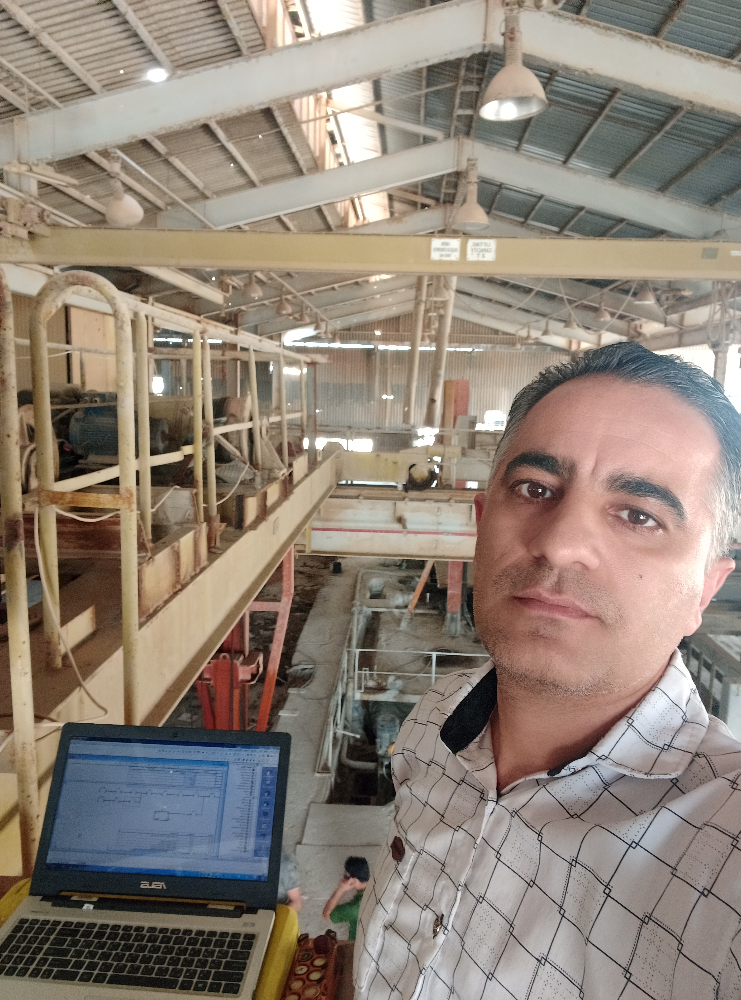
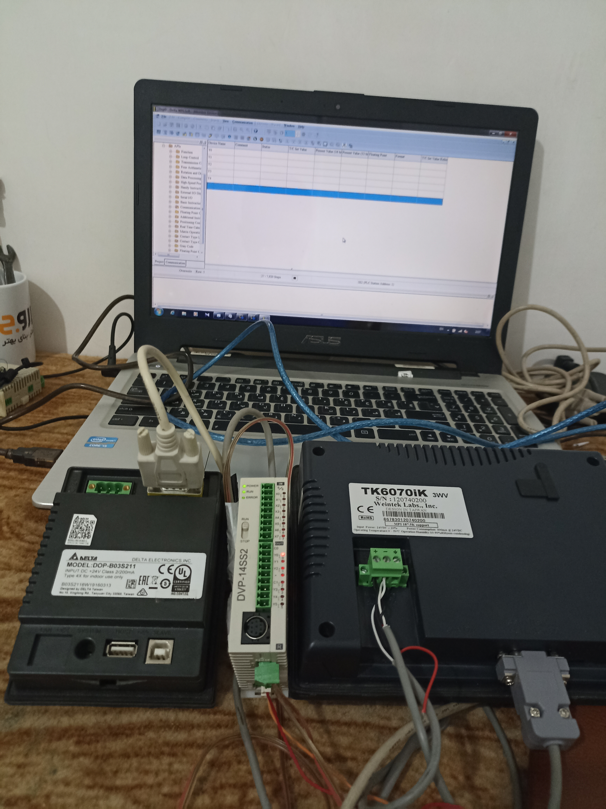

01اتوماسیون صنعتی
برنامهنویسی و راهاندازی PLC
طراحی منطق کنترلی، برنامهنویسی PLC و راهاندازی تجهیزات خط تولید با هدف افزایش دقت و پایداری سیستم.
بخشی از پروژههای اجراشده در زمینه اتوماسیون صنعتی، طراحی تابلو برق، برنامهنویسی PLC و مانیتورینگ خطوط تولید

01طراحی منطق کنترلی، برنامهنویسی PLC و راهاندازی تجهیزات خط تولید با هدف افزایش دقت و پایداری سیستم.

02طراحی مدار فرمان و قدرت، انتخاب تجهیزات، سیمکشی و اجرای تابلو برق متناسب با نیاز پروژه.

03طراحی رابط کاربری صنعتی برای نمایش وضعیت تجهیزات، ثبت اطلاعات، هشدارها و کنترل فرایند تولید.
 04
04
تنظیم و راهاندازی درایو، کنترل سرعت موتور و ایجاد ارتباط میان اینورتر، PLC و سیستم مانیتورینگ.

05بررسی سیستم قدیمی، اصلاح مدارها، ارتقای کنترلر و ایجاد سیستم مانیتورینگ برای افزایش بهرهوری، کاهش توقف و عیبیابی سریعتر خط تولید.
برای مشاوره، بررسی تجهیزات و دریافت پیشنهاد اجرایی با ما تماس بگیرید.
درخواست مشاوره